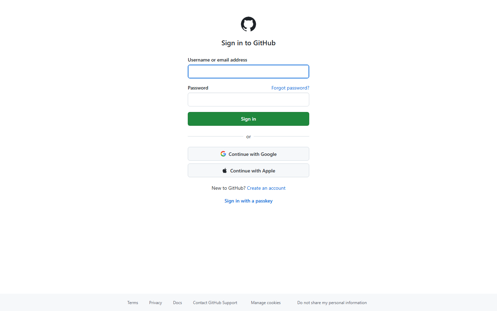
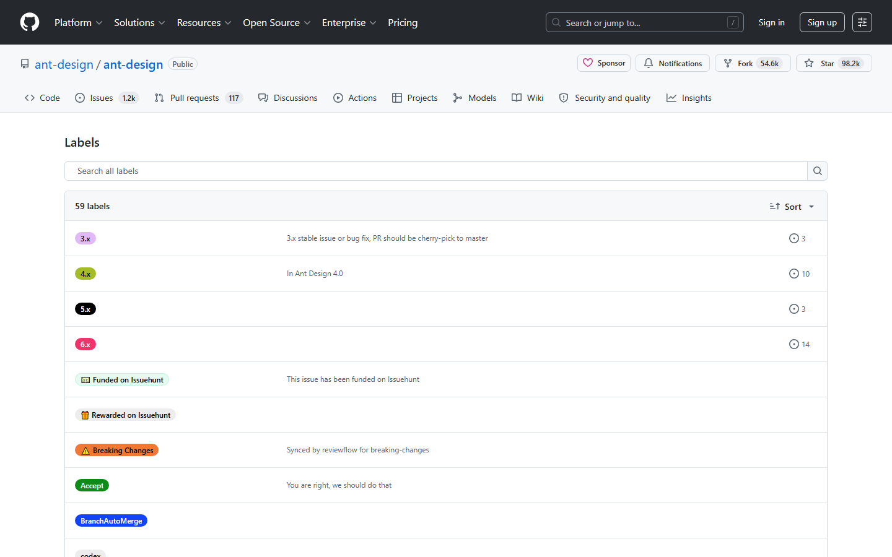
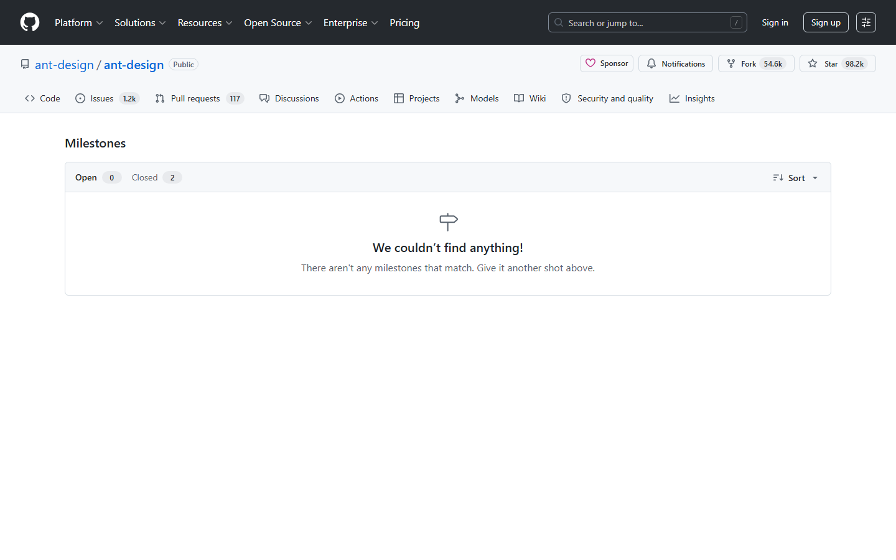

第五课：Issue（下）— 高级功能
时长：25 分钟 | 前置：第四课 | P0 词条：12 个 | 覆盖 UI 元素：14 个
学习目标
学完这节课，你能：
- 创建和使用 Issue Template（Issue 模板）
- 理解 Pin、Lock、Transfer、Convert 等高级操作
- 用 #引用 和 PR 关联技巧高效组织 Issue
- 理解 Subscribe（订阅）的作用
- 用关键词在 PR 中自动关闭 Issue
0. 开场（1 min）
画面：Issue 列表页

旁白：
"上节课我们学了怎么创建和回复 Issue。但这只是基础。真正的开源项目，Issue 管理还有一堆高级功能：模板、置顶、锁定、转移到别的仓库……
今天把这些剩下的都讲完。"
1. Issue Template（Issue 模板）（6 min）
画面：先展示一个有模板的仓库（如 ant-design），点 New issue

旁白：
"很多大项目，你点 New issue 不会直接给你空白页，而是让你选一个问题类型。这叫 Issue Template——Issue 模板。"
1.1 什么是 Issue Template
| 概念 | 说明 |
|---|---|
| 是什么 | 预定义的 Issue 格式，帮提交者把信息写完整 |
| 好处 | 避免"有个 Bug"这种无意义 Issue |
| 常见分类 | Bug Report（Bug 报告）/ Feature Request（功能请求）/ 自定义 |
1.2 用户视角：使用模板
| 步骤 | 画面 |
|---|---|
| 1. 点 New issue | 出现模板选择页面 |
| 2. 点击 Bug Report 旁的 Get started | 进入预填格式的编辑页 |
| 3. 按模板提示填 | 每个区域都有标记告诉你该填什么 |
| 4. 填完提交 | 和普通 Issue 一样 |
1.3 维护者视角：创建模板
注意：以下操作需要有仓库写权限。
模板文件位置：.github/ISSUE_TEMPLATE/ 目录下
| 步骤 | 操作 |
|---|---|
| 1 | 在仓库里创建 .github/ISSUE_TEMPLATE/bug_report.md |
| 2 | 写模板内容（Markdown 格式 + YAML 元数据） |
| 3 | 提交后，点 New issue 就能看到 |
模板文件结构示例：
---
name: Bug Report
about: Create a report to help us improve
title: "[Bug] "
labels: bug
assignees: ""
---
**Describe the bug**
A clear and concise description of what the bug is.
**To Reproduce**
Steps to reproduce the behavior:
1. Go to '...'
2. Click on '....'
3. See error
**Expected behavior**
What you expected to happen.
**Screenshots**
If applicable, add screenshots.
中文版本完全可以自己做——把英文部分换成中文就行。
操作演示：

【录屏】在 .github/ISSUE_TEMPLATE 目录创建 bug_report.md → 提交 → 回到 Issues → 点 New issue → 展示模板效果
2. Issue 高级操作（4 min）
画面：打开一个 Issue，鼠标指向 ... 菜单
2.1 Pin issue（置顶）
| 概念 | 说明 |
|---|---|
| 作用 | 把 Issue 固定在 Issue 列表最上面 |
| 什么时候用 | 重要公告、FAQ、贡献指南等 |
| 能 Pin 几个 | 最多 Pin 3 个 |
| 怎么取消 | 点 Unpin issue |
2.2 Lock conversation（锁定讨论）
| 概念 | 说明 |
|---|---|
| 作用 | 禁止所有人再评论（包括仓库管理员） |
| 什么时候用 | 讨论跑题、吵架、或已过时不想再被顶上来 |
| 能解锁吗 | 可以，管理员可以 Unlock |
| 锁定后还能看吗 | 能看，只是不能评论 |
2.3 Transfer issue（转移 Issue）
| 概念 | 说明 |
|---|---|
| 作用 | 把这个 Issue 移动到另一个仓库 |
| 什么时候用 | Issue 提错仓库了 |
| 转移后编号会变吗 | 会在目标仓库获得新编号 |
| 旧链接怎么办 | 旧链接自动重定向到新位置 |
2.4 Convert to discussion（转为讨论）
| 概念 | 说明 |
|---|---|
| 作用 | 把 Issue 转成 Discussion（论坛形式的讨论） |
| 什么时候用 | 发现这个不是 Bug 也不是功能请求，而是开放性讨论 |
3. Subscribe（订阅）（2 min）
画面：Issue 页面右侧面板
| 概念 | 说明 |
|---|---|
| 是什么 | 订阅这个 Issue 的通知 |
| Subscribe 按钮 | 订阅后你会收到这个 Issue 有新评论时的通知 |
| Unsubscribe | 取消订阅 |
| 自动订阅规则 | 你创建的 Issue、你评论过的 Issue 自动订阅 |
| 在哪里管理所有订阅 | Settings → Notifications → Subscriptions |
4. Issue 和 PR 的关联技巧（5 min）
4.1 #引用：在 Issue 中关联 PR
| 操作 | 效果 |
|---|---|
在 PR 正文写 Fixes #123 |
PR 合并后，自动关闭第 123 号 Issue |
| 在 Issue 评论区粘贴 PR 链接 | GitHub 自动展开 PR 信息卡片 |
| 在 Issue 右侧 Development 区域 | 手动关联 PR |
4.2 自动关闭 Issue 的关键词
在 PR 描述里用这些关键词 + Issue 编号，PR 合并后 Issue 自动关闭。
| 关键词 | 示例 |
|---|---|
Close / Closes / Closed |
Closes #123 |
Fix / Fixes / Fixed |
Fixes #456 |
Resolve / Resolves / Resolved |
Resolves #789 |
注意：关键词 + 编号必须在 PR 正文里，不是标题。而且 PR 必须是合并到默认分支（通常是 main）才生效。
4.3 Development 关联
| 元素 | 说明 |
|---|---|
| Issue 页面右侧 Development 区域 | 显示关联了哪些 PR |
| 点击齿轮 ⚙ | 手动搜索并关联已有 PR / 创建新分支 |
| PR 合并后 | Issue 自动关闭（如果用了 Fixes 关键词或 Development 关联） |
操作演示：
【录屏】开一个 Issue → 创建关联 PR 时写 "Fixes #123" → 合并 PR → 回到 Issue 页 → "你看，Issue 自动关闭了，还显示了 'Closed as completed'"
5. Issue 列表批量操作（2 min）
画面：Issue 列表页
| 操作 | 说明 |
|---|---|
| 勾选 Issue 左侧复选框 | 选中一个或多个 |
| 上方出现批量操作条 | Assign / Label / Milestone / Mark as 等 |
| Mark as | 批量标记为 Open/Closed |
| 搜索过滤后全选 | 可以批量关闭所有过滤出来的 Issue |
6. 最佳实践总结（2 min）
- 写 Bug Report 时：附上环境信息（浏览器、系统版本、截图）
- 写 Feature Request 时：说清楚"现在是什么样"和"希望变成什么样"
- 提交前搜索：看看有没有人已经提过，避免重复（Duplicate）
- 及时 Close：解决了的 Issue 及时关掉，保持列表干净
- 善用 Label：不加标签的 Issue 就像没有分类的邮件，久了会乱
- 每个仓库最多 Pin 3 个 Issue：把最重要的信息放那里（贡献指南、Roadmap、FAQ）
课后作业
- 在你自己创建的仓库里，创建
.github/ISSUE_TEMPLATE/目录，做一个 Bug Report 模板 - 测试自动关闭：创建 Issue #1 → 创建测试 PR → 写
Fixes #1→ 合并 PR → 验证 Issue 被自动关闭 - 在 Issue 里用
@提及你自己的另一个账号（或让朋友注册一个）
本课术语速查
{.glossary-table}
| 英文 | 中文 | 出现位置 |
|---|---|---|
| Issue Template | Issue 模板 | New issue 时选择 |
| Bug Report | Bug 报告 | 模板类型 |
| Feature Request | 功能请求 | 模板类型 |
| Pin | 置顶 | Issue ... 菜单 |
| Lock conversation | 锁定讨论 | Issue ... 菜单 |
| Transfer issue | 转移 Issue | Issue ... 菜单 |
| Convert to discussion | 转为讨论 | Issue ... 菜单 |
| Subscribe | 订阅通知 | Issue 右侧面板 |
| Fixes / Closes / Resolves | 修复/关闭/解决（自动关闭关键词） | PR 正文 |
| Development | 开发关联 | Issue 右侧面板 |
| Roadmap | 路线图 | 不涉及但常见 |